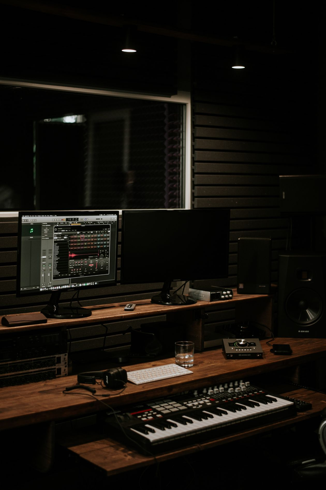

Studio — the working details
What you receive,
and on what terms.
Most producer pages stop at a photo of a desk. This one lists the files, the chain they went through, and the terms they’re delivered under — the things a label actually asks about on the second email.
The short version
I’m Dario Venn. I spent six years as a club-night sound technician in Rotterdam before I produced a record anyone released — which is why my mixes are tested on real PAs and why my arrangements are conservative in the places clubs punish. Production work started in 2019; since 2022 it has been my full-time work, mostly for independent labels and vocalists who need a record finished, not started.
I work in one room, on one setup I know well, and I take on at most two productions at a time. That limit is why the booking calendar on this site is honest: when it says the next slot is January, it is.
What I don’t do: ghost-production under another artist’s name without credit, and buy-on “guaranteed playlist” schemes. Both get a polite no.

Deliverables
Every booking ends with the same file set.
| File | Specification | Notes |
|---|---|---|
| Pre-master | WAV · 24-bit / 44.1 kHz · −1 dBTP headroom | Unclipped and unlimited, ready for your mastering engineer or streaming prep. |
| Extended club mix | WAV · 24-bit / 44.1 kHz | DJ-friendly intro/outro, 16–32 bars each end, same master chain. |
| Radio / streaming edit | WAV · 24-bit / 44.1 kHz | Shortened arrangement, no content edits faked — the structure is re-cut, not censored. |
| Instrumental | WAV · 24-bit / 44.1 kHz | Vocal removed at the mix, not muted at the master — balances re-checked. |
| Grouped stems | WAV · 24-bit / 44.1 kHz · Drums / Bass / Music / Vocal | Included for remixes; +€250 on productions (see fees). Printed through the same chain so stems sum to the master. |
| MIDI of main parts | Standard MIDI files | On request, for bass and lead parts — useful for your own remixes and live re-creation. |
The chain, plainly
- DAW
Ableton Live. Every project archived with all samples and presets frozen, so a session reopens identically in five years.
- Bass
One analogue monosynth (a Moog Subsequent 37), recorded, not emulated — it is the only hardware sound source on most records.
- Everything else
In the box: sampled drums, software synths, and a short, fixed plugin chain I know by ear rather than by preset name.
- Monitoring
Two-way nearfields in a treated room, a mono grot-box check, and — before delivery — a play on two club PAs at working volume.
- Mastering
I deliver a pre-master, not a loudness-war master. Final mastering stays with your engineer, or I can recommend two I work with regularly.
Licensing & splits, in plain language
The fee buys the production work, not the song. Unless we agree a buyout in writing, the master is licensed to you for the release we discussed, and I keep a producer credit on it — “Produced by VENN” — wherever credits are carried.
Publishing follows the writing. If I write or co-write musical material, my share is registered with the track and agreed in writing before release day — on co-writes, on day one. If I only produce your finished song, I claim no publishing.
Remixes are fee-only unless a points deal is agreed up front; I take no publishing on a remix of your composition. Samples are your responsibility to clear — I’ll flag anything I recognise, but clearance sits with the releasing label.
Terms
Turnaround, revisions, payment.
TIME
3–4 weeks, standard
A full production runs three to four weeks from brief to delivery; a remix, three. Rush delivery inside 10 working days is possible at +25% — ask before assuming, the calendar decides.
CHANGES
Two rounds included
Two rounds of arrangement revisions are in every fee. Mix tweaks that don’t move the arrangement don’t count as rounds. Further rounds are billed at the co-write day rate, pro-rata, and quoted before they start.
MONEY
50% to book the slot
Half the fee books the calendar slot and is the point the slot becomes yours; the balance is due on delivery of the pre-master, before stems are released. Fees are in euros, excluding VAT.
Next production slot: January 2027.
Two slots a month, taken in enquiry order. The form takes four minutes.